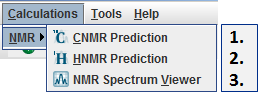

Prediction of nuclear magnetic resonance (NMR) spectra
Version 5.10.1
Fast and accurate prediction of 13C and 1H NMR spectra from the molecular structure plays an important
role in structure validation and elucidation of molecules. The NMR predictor application is able to predict NMR spectra for
standard organic molecules containing the most frequent atoms (H, C, N, O, F, Cl, Br, I, P, S, Si, Se, B, Sn, Ge, Te, As).
Chemical shifts are estimated by a linear model based on a topological description scheme and are in relation to the chemical shift of tetramethylsilane (δ(TMS)=0 ppm).
13C and 1H chemical shift training data were retrieved from the NMRShift Database.
Basic features
- Prediction of 13C and 1H NMR chemical shifts;
- Spin-spin couplings are taken into account according to the first order approximation;
- Vicinal proton-proton coupling constants computed by the Karplus equation in case of 1H NMR;
- NMR Spectrum Viewer is able to display NMR spectra in JCAMP-DX format.
The NMR Predictor graphical user interface incorporates the following features:
- Export predicted spectrum to molfile;
- Export predicted spectrum to JCAMP-DX file and/or import JCAMP-DX (*.jdx) reference spectrum;
- Create PDF file as report of your prediction, containing molecule structure, predicted spectrum, and related tables;
- Detached Copy to clipboard action for all predictor panels and tables is available;
- Update molecule from MarvinSketch;
 Toggle between decoupled and coupled NMR spectrum;
Toggle between decoupled and coupled NMR spectrum;- Toggle between explicit and implicit hydrogen display;
- Select NMR prediction frequency from a predetermined list;
- Add common organic solvent peaks to predicted spectrum;
- Restore default NMR predictor settings, e.g., prediction frequency, display, and view options;
- Display realistic or line NMR spectra;
- Add atom indices or chemical shift values to signals as spectrum labels;
- Display spectrum scale in ppm or Hz units;
- Show integral curve to assign value to NMR spectrum signals;
- Display legend on spectrum display panel.
- Show local maximum values of reference spectrum;
- Personalize the color management of NMR Predictor;
- Set chart color uniquely;
- When you click on a peak on spectrum display panel or on an atom on molecule preview panel, selection will move to and zoom in on the selected signal;
- Choose multiplet selection mode: individual selection in case of overlapping multiplets is available;
- Use various modes of zoom in on spectrum.
- Find spectrum and molecule structure related information in Atom, Multiplet, and Coupling tables.
- Show atom indices on molecule structure corresponding to the different multiplets;
Atoms of the input molecule and multiplets of the NMR spectrum are linked together: upon selection of an atom the corresponding multiplet is highlighted and vice versa.
A single NMR prediction is allowed to contain more molecules.
NMR predictor is integrated into MarvinSketch's Calculations menu, and contains the following three components to discover NMR spectra of molecules:

- CNMR Prediction and
- HNMR Prediction;
- NMR Spectrum Viewer.
NMR Prediction is accessible via cxcalc as well (cxcalc nmr -h).
To improve our product, please send feedback to calculators-support@chemaxon.com.
Back to top
Copyright© 2011-2012 ChemAxon Ltd.
All rights reserved.